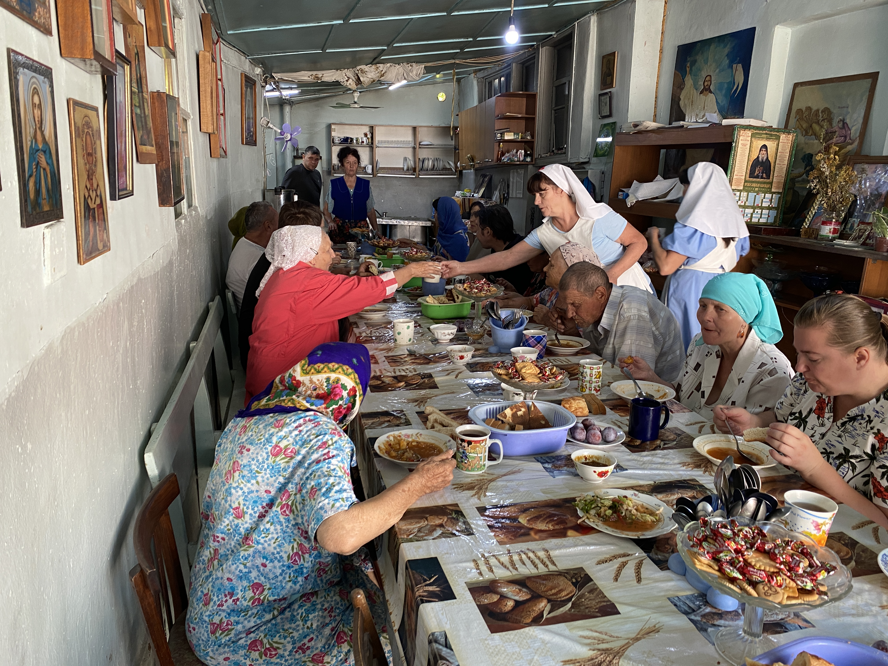

<section aria-labelledby="social-title">
  <h2 class="h2-title">Социальное служение</h2>

  <div class="fours-menu">
    <article>
      <a href="#" data-page="social-help" class="fours-menu-link"
        >Помощь нуждающимся</a
      >
    </article>
    <article>
      <a href="#" data-page="social-clothing" class="fours-menu-link"
        >Вещевой склад</a
      >
    </article>
    <article>
      <a href="#" data-page="social-meal" class="fours-menu-link">
        
        <p class="news-title">Благотворительная трапеза</p>
      </a>
    </article>
    <article>
      <a href="#" data-page="social-fair" class="fours-menu-link">Ярмарки</a>
    </article>
  </div>
</section>
